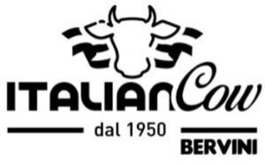

Trade Mark Journal No.2025/049 5 December 2025
WO0000001887330 (29)
Office of origin: Italy
Date of International Registration:2 September 2025
Date of designation in the UK:
2 September 2025

The trademark consists of an imprint depicting a highly stylized cow's head flanked on at right and left by three undulating bands of varying sizes, followed below by the wording ITALIANCOW DAL 1950 BERVINI in fancy characters, the expression ITALIANCOW being of larger dimensions and with a left-hand portion of the letter C partially overlapping on the letter N, said expression being in turn followed below, in a central position, by the expression DAL 1950 flanked at right and left by two identical horizontal bands, the right-hand band having the wording BERVINI below it.
International priority date claimed: 19 May 2025
(Italy)
(302025000080053)
- Class 29
- Beef; beef slices; beef patties; beef stew; beef jerky; corned beef; dried beef; meat in slices; sliced meat; meat, frozen; meat, preserved; veal; minced meat; meat, prepared; dried meats; meat, processed; mincemeat; packaged meats; meat, tinned; chili con carne; meat extracts; meat jellies; meat pastes; meatballs; prepared beef; bottled cooked meat; luncheon meats; meat-based spreads; processed meat products; meat-based snack foods; vegetable-based meat substitutes; pre-packaged dinners consisting primarily of meat; meat, fish, poultry and game; meat extracts; preserved, frozen, dried and cooked fruits and vegetables; jellies, jams, compotes; eggs; milk, cheese, butter, yogurt and other milk products; oils and fats for food.
BERVINI PRIMO S.R.L.
Representative: Dr. Modiano & Associati SpA, Via Meravigli, 16, I-20123 Milano, ITALY